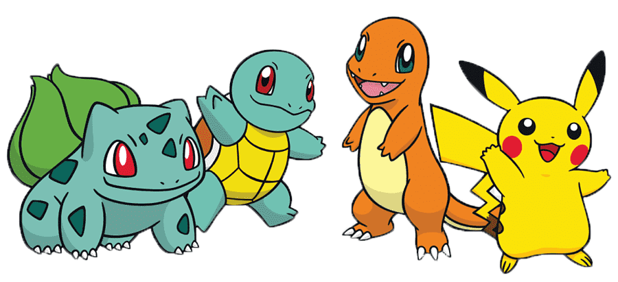

O que são Pokémons?
Pokémon é uma franquia de mídia que pertence a The Pokémon Company, tendo sido criada por Satoshi Tajiri em 1995. Ela é centrada em criaturas ficcionais chamadas "Pokémon", que os seres humanos capturam e os treinam para lutarem um contra o outro como um esporte.
